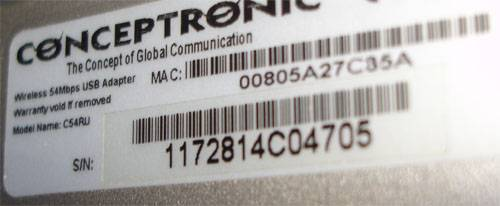

CONCEPTOS BASICOS
Aquí se muestra una captura de airdump-ng, que es el verdadero motor de todas las utilidades que se utilizan para auditar.
Vamos a explicar todos los conceptos que aparecen, para lo cual vamos a dividirles en tres secciones, la primera los imprescindibles de conocer, los segundos los interesantes y por ultimo los que están ahí pero no nos interesan.
BSSID PWR Beacons # Data # / s CH MB ENC ESSID
00:15:10:3C:D4:AC 42 19 316 326 6 54. WEP WIFI
00:09:5B:1F:44:10 36 54 0 0 9 11 OPN WIRELESS
00:A5:5C:9F:29:A3 16 14 0 0 11 11 WPA PIRATA
BSSID STATION PWR Packets Probes
00:15:10:3C:D4:AC 00:0A:4F:1B:B5:2B 41 459 WIFI
00:15:10:3C:D4:AC 00:14:2D:6D:5D:6F 19 97 WIFI
|
Los Imprescindibles
MAC
Es un numero único compuesto de (6 bloques hexadecimales se nos presenta en
formato XX:XX:XX:XX:XX:XX), que asignan los fabricantes a los dispositivos
de red (adaptadores de red y MODEM). Es permanente y único y no puede
haber 2 iguales “en teoría”. Viene grabado en el propio dispositivo para poder
identificarlo de forma inequívoca. Este número es equivalente a nuestro D.N.I.
o al código de barras de los productos.

BSSID
Es el numero MAC del router.
PWR
Es el nivel de señal el valor mostrado depende del controlador, algunos
controladores no lo muestran, conforme te acercas al punto de acceso o a la
estación la señal aumenta. Si PWR es -1, el controlador no soporta reportar el
nivel de señal.
# Data
Número de paquetes de datos capturados (si es WEP, sólo cuenta IVs), incluyendo
paquetes de datos de difusión general.
ESSID
Nombre de la red inalámbrica, conocida como "SSID", puede estar vacía
si el ocultamiento de SSID está activo. En este caso airodump-ng tratará de
recuperar el SSID de las respuestas a escaneos y las peticiones de asociación.
STATION
Es el numero MAC de cada adaptador inalámbrico
asociado al MODEM, también se denomina Cliente.
En la captura de más arriba se han detectado dos clientes (00:0A:4F:1B:B5:2B y
00:14:2D:6D:5D:6F).
Los Interesantes de conocer
# / s
Solo aparece cuando se esta inyectando, indica la cantidad de paquetes por
segundo que le estamos inyectando al MODEM.
ENC
Algoritmo de encriptación en uso. OPN = sin encriptación, "WEP?" =
WEP o mayor (no hay suficiente datos para distinguir entre WEP y WPA), WEP (sin
la interrogación) indica WEP estática o dinámica, y WPA si TKIP o CCMP están
presentes.
CH
Número de canal (obtenido de los paquetes beacon). Nota: algunas veces se
capturan paquetes de datos de otros canales aunque no se esté alternando entre
canales debido a las interferencias de radiofrecuencia.
Los que no nos interesan
Beacons
Número de paquetes-anuncio enviados por el MODEM, a nosotros no nos interesan.
MB.
Velocidad máxima soportada por el MODEM.
Lost
El número de paquetes perdidos en los últimos 10 segundos.
Packets
El número de paquetes de datos enviados por el cliente.
Probes
Los ESSIDs a los cuales ha intentado conectarse el cliente.
Nota: podemos encontrar algunas variaciones según las versiones, pero lo fundamental siempre es lo mismo, que son los datos que hemos definido.
OTROS CONCEPTOS QUE HAY QUE SABER
Modo Monitor
Forma muy particular de trabajo de las tarjetas wireless. Esta forma de trabajar de las tarjetas wireless es muy atípico y idealmente es poner la tarjeta de forma que pueda detectar todo el trafico que circula por su alrededor. Para que lo entendamos es como "pegar la oreja a la pared para ver que hacen nuestros vecinos”. De esta forma podemos capturar todo el tráfico. Eso si, sin toser y sin casi respirar. No todas las tarjetas soportan este modo, así que hay que tenerlo en cuenta a la hora de elegir la tarjeta.
Inyección de trafico wireless
Consiste en que la tarjeta mientras esta en modo monitor ("a la escucha") puede trasmitir paquetes. Esto es muy importante ya que una sola tarjeta mientras esta a la escucha capturando trafico, permite los siguientes servicios: autentificación falsa, desauntetificación, y la reinyección de tráfico. Tampoco es necesario que este capturando trafico pero si que debe de estar en modo monitor. Tampoco todas las tarjetas permiten inyectar y recibir a la vez.
Re-inyección de trafico wireless
Forma parte de la inyección de tráfico, normalmente llamado ataque 3. Consiste en que la tarjeta puede retrasmitir paquetes que se obtienen de la siguiente forma: el origen es un cliente estación valido y destino el punto de acceso al cual esta autentificado y asociado al cliente real o incluso un cliente imaginario (lo que se le llama autenticación falsa). El proceso es el siguiente, se captura una petición valida de ARP, se guarda y se retransmite una y otra vez al punto de acceso. El punto de acceso responderá con datos IV únicos y diferentes a cada petición enviada. Por lo tanto no es inyección sino reinyección. Matizar que los datos que se reenvían ha podido ser capturado con anterioridad al proceso final de reinyección. Es decir se captura un petición valida, se guarda en un archivo y posteriormente se trasmite, en algunos casos no hará falta ni siquiera que hay un cliente tanto real como creado falsamente por nosotros. También se puede hacer las dos cosas a la vez, es decir retrasmitir mientras se esta capturando. En definitiva la reinyección es como imitar el dialogo entre dos loros, ver a que sonidos responde el más veterano en función de los sonidos emitidos por el loro más joven, y posteriormente simular el sonido del loro joven, para que el loro mayor nos responda.